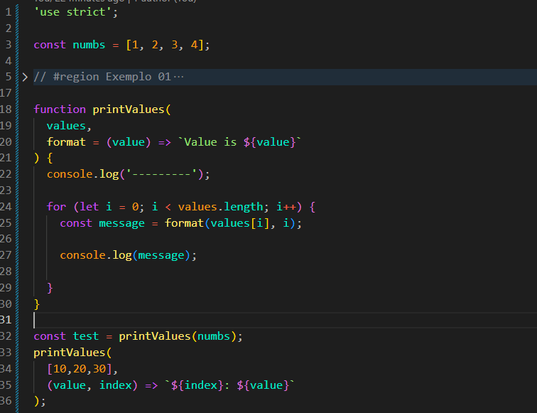
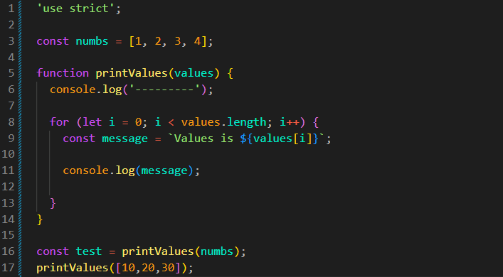
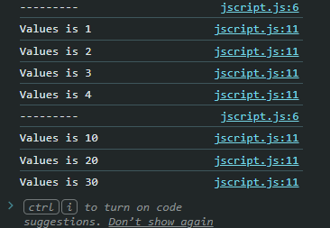

Callback in a Loop
Intro
Agora veremos o funcionamento de uma callback junto de um loop.
Agora veremos o funcionamento de uma callback junto de um loop.
JS:

Se desejarmos criar uma função que percorra um array utilizando um loop, podemos fazer da seguinte forma:
const numbs = [1, 2, 3, 4];
function printValues(values) {
console.log('--------');
for (let i = 0; i < values.length; i++) {
const message = `Values is ${values[i]}`;
console.log(message);
}
}
const test = printValues(numbs);
printValues([10, 20, 30, 40]);

Dessa forma, teremos como resultado:

Agora, se desejarmos utilizar formatos diferentes, podemos alterar a forma como o valor é exibido:
function printValues(values) {
console.log('---------');
for (let i = 0; i < values.length; i++) {
//const message = `Values is ${values[i]}`;
const message = `${i}: ${values[i]}`;
console.log(message);
}
}
Dessa forma, teremos o índice junto do valor correspondente no array. Porém, se quisermos deixar essa função mais flexível, podemos utilizar uma callback para definir diferentes formatos.
Podemos modificar nossa function para receber dois parâmetros. O primeiro será o array que iremos percorrer e o segundo será uma callback responsável por definir como cada valor será formatado.
Também podemos definir um valor padrão para a callback. Assim, caso nenhum segundo parâmetro seja informado, será utilizada a função definida no default:
function printValues( values, format = (value) => `Value is ${value}` ) { console.log('---------'); for (let i = 0; i < values.length; i++) { const message = format(values[i], i); console.log(message); } } const test = printValues(numbs); printValues( [10, 20, 30], (value, index) => `${index}: ${value}` );
No for, usamos values[i] para obter o valor atual do array e passamos esse valor para a callback.
Na chamada format(values[i], i), passamos dois valores para a callback: primeiro o valor atual do array e depois o seu índice. A callback recebe esses valores pelos parâmetros value e index.
Quando chamamos a função passando (value, index) => `${index}: ${value}`, estamos definindo um novo formato para cada item. O for executará essa callback a cada repetição, permitindo que cada valor seja formatado de uma maneira diferente sem precisar alterar a função printValues.
Resumo: Basicamente, criamos uma única função que pode utilizar diferentes callbacks de acordo com o parâmetro recebido. A callback é opcional, pois definimos uma função como valor padrão (default). Dessa forma, se nenhuma callback for passada, a função utilizará o comportamento padrão. Caso uma callback seja informada, ela será utilizada para definir um comportamento diferente.